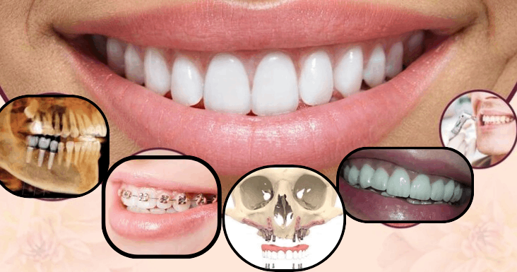

ماذا يحدث للفك بعد فقدان الأسنان؟
انكماش العظم وتغير شكل الوجه.. لماذا التأخير في التعويض خطر؟
التفاصيل ←بناءً على أحدث الأبحاث الأكاديمية وتقنيات الطباعة ثلاثية الأبعاد، نقدم لك رعاية طبية متكاملة في قلب مدينة إب.
استشارة تخصصية مجانيةنال ثقة أكبر المنصات الطبية المعتمدة في اليمن

تعويض الأسنان المفقودة بدقة متناهية تضمن استعادة الوظيفة والجمال.

علاج الحالات المعقدة والكسور وأورام الفم بجودة أكاديمية.

حلول تقويمية للأطفال والكبار للحصول على إطباق سليم وابتسامة واثقة.
انكماش العظم وتغير شكل الوجه.. لماذا التأخير في التعويض خطر؟
التفاصيل ←
معلومات قد تفاجئك حول أسباب حساسية السن بعد العلاج وكيفية حلها.
التفاصيل ←
التشخيص الخاطئ قد يؤدي لخلع سن سليم.. ابحث عن السبب الحقيقي.
التفاصيل ←
استعد إشراقتك في أقل من ساعة بأحدث التقنيات الطبية الآمنة.
التفاصيل ←
التنفس من الفم ومص الأصابع.. عادات بسيطة تسبب مشاكل تقويمية كبرى.
التفاصيل ←
إجراءات احترازية هامة للمرضى الذين خضعوا للعلاج الإشعاعي أو الكيميائي.
التفاصيل ←
قاعدة الأسبوعين: متى يجب أن تقلق من جروح الفم الصغيرة؟
التفاصيل ←
كيف توظف التكنولوجيا الرقمية لضمان نجاح الزراعة في الحالات الصعبة.
التفاصيل ←